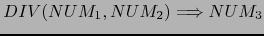
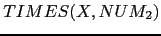
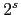
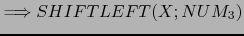

Sig: PARTE: CREATE YOUR OWN Sup: Transformaciones Árbol Ant: Treehugger Con:
Modifique el árbol generado por el código de esa práctica usando las transformaciones de constant folding o plegado de las constantes:

{ $NUM_3{VAL} = $NUM_1{VAL} + $NUM_2{VAL} }
{ $NUM_3{VAL} = $NUM_1{VAL} - $NUM_2{VAL} }

{ $NUM_3{VAL} = $NUM_1{VAL} * $NUM_2{VAL} }
 { $NUM_3{VAL} = $NUM_1{VAL} / $NUM_2{VAL} }
etc.
Opcionalmente si lo desea puede considerar otras transformaciones:
 and { $NUM_2{VAL} =  para algún 
}
 { $NUM_3{VAL} = s }
Casiano Rodríguez León